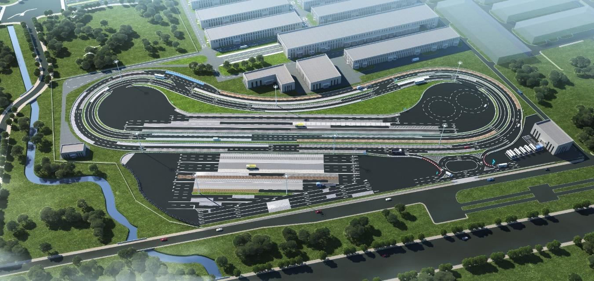
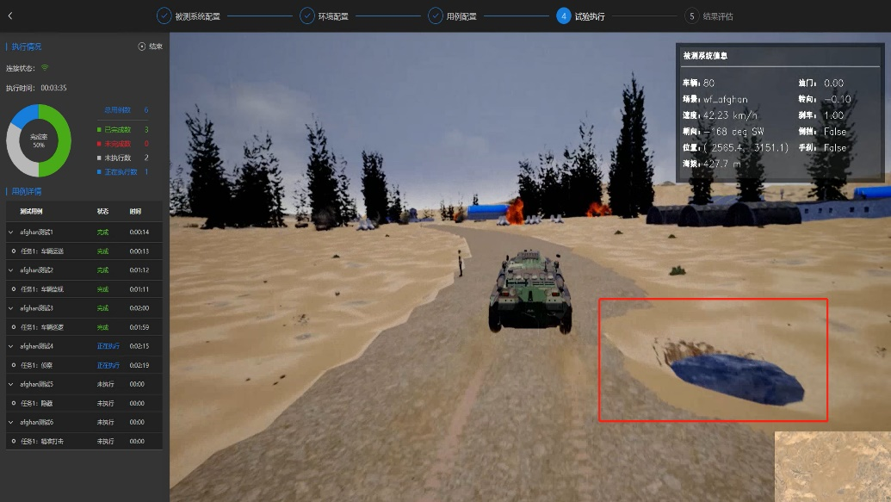

01
Autonomous-Driving Simulation
A software-in-the-loop (SIL) environment built on CARLA and Matlab+UE co-simulation — so driving software can run, sense and decide without a physical vehicle.
- CARLA / Matlab virtual vehicles & traffic scenarios
- Virtual sensors — Camera, LiDAR and more
- Vehicle state & control-command exchange
- External program integration
- Software-in-the-loop (SIL) closed-loop testing
- Timestamp-Based Log Replay
- Amesim dynamics-model replacement




